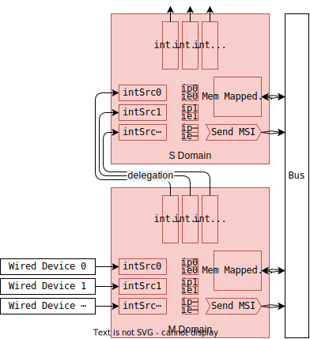

🧶APLIC
在基于消息的中断模式下，APLIC将传统的线中断转换为MSI。 为了提高效率，除非设备在物理上是分开的（例如在不同的芯片组上），单个APLIC实例即可服务所有处理器核心。
In message-based interrupt mode, the APLIC converts traditional wired interrupts into MSIs. For efficiency, a single APLIC instance should serve all harts, unless devices are physically separated (e.g. on different chiplets).
域（Domain）
APLIC实现了分层的域结构来管理不同的特权态:
- 根域（机器态）直接接收所线中断,
- 子域从其父域接收委托的中断,
- 监管态域可以处理监管态和虚拟化监管态中断。
The APLIC implements a hierarchical domain structure to manage different privilege levels:
- The root domain (machine level) directly receives all wired interrupts,
- Child domains receive delegated interrupts from their parent domains,
- A supervisor-level domain can handle both supervisor-level and virtualized supervisor-level interrupts.
对于大型对称多处理系统，通常两个域的配置就足够了：
- 一个机器态域,
- 一个监管态域。
For large symmetric multiprocessing systems, a two-domain configuration typically suffices:
- One machine-level domain,
- One supervisor-level domain.

内部寄存器（Internal Registers）
APLIC在内部寄存器中维护中断状态，包括两个关键寄存器：
ip[intSrcNum位]: 中断待处理状态寄存器,ie[intSrcNum位]: 中断使能控制寄存器。
APLIC maintains interrupt status in internal registers, including two critical registers:
ip[intSrcNum bits]: Interrupt pending status registers,ie[intSrcNum bits]: Interrupt enable control registers.
这些寄存器通过内存映射接口进行控制。 有关详细的寄存器规范，请参阅AIA规范1。
These registers are controlled through memory-mapped interfaces. For detailed register specifications, refer to the AIA specification1.
竞争条件（Race Conditions）
ip寄存器可以被多个来源修改，从而产生潜在的竞争条件。
AIA规范没有规定APLIC在这种竞争条件下的行为。
ChiselAIA实现了一个基于优先级的解决机制。
优先级(从高到低):
- APLIC内部操作：发送MSI后清除
ip， - 线设备操作：通过
intSrc设置ip， - 处理器核心操作：通过内存映射寄存器设置/清除
ip。
The ip registers can be modified by multiple sources, creating potential race conditions.
The AIA specification does not specify the APLIC behaviors under this race condition.
ChiselAIA implements a priority-based resolution mechanism.
Priority levels (highest to lowest):
- APLIC internal operations: Clearing
ipafter sending an MSI, - Wired device operations: Setting
ipviaintSrc, - Hart operations: Setting/Clearing
ipvia memory mapped registers.
高优先级操作会覆盖低优先级操作。
我们推荐通过编程的方式避免竞争条件：
在通过内存映射寄存器修改相应的ip之前，断开线设备。
Higher priority operations override the lower priority ones.
We recommend to avoid race conditions through programming:
detaching the wired device before modifying corresponding ip through memory-mapped registers.
The RISC-V Advanced Interrupt Architecture: 4.5. Memory-mapped control region for an interrupt domain